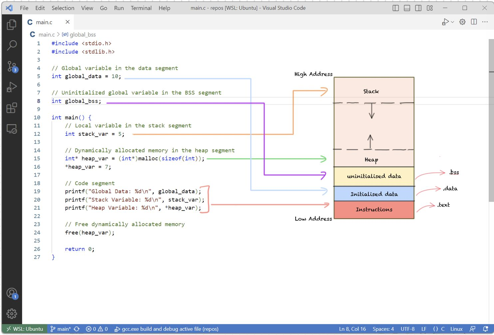

RAM

- 2025 · 01 RAM
RAM (Random Access Memory), Bu bellek tiplerinde depolanan veriler istenildiği takdirde hızlı ulaşılmaktadır. Bu sebeple romdaki veriler ram üzerine aktarılarak cihazların daha hızlı işlem yapmasını sağlanır.
Statik RAM
Bu tür bellek, verileri depolamak için flip-flop devreleri kullanır. Flip-flop devreleri, verileri depolamak için iki farklı durum arasında geçiş yapabilen elektronik devrelerdir. SRAM, verileri depolamak için bu devreleri kullanır ve verileri kaybetmez, yani verileri sürekli olarak tutabilir.
Dinamik RAM
Bu tür bellek, verileri depolamak için kapasitörler kullanır. Kapasitörler, verileri depolamak için elektriksel enerji depolayan elektronik devrelerdir. DRAM, verileri depolamak için bu devreleri kullanır, ancak verileri kaybetme riski vardır, yani verileri sürekli olarak yenilemek gerekir.
SRAM & DRAM
| Özellik | SRAM | DRAM |
|---|---|---|
| Hız | Yüksek | Düşük |
| Güç Tüketimi | Düşük | Yüksek |
| Güvenilirlik | Yüksek | Düşük |
| Maliyet | Yüksek | Düşük |
| Kapasite | Düşük | Yüksek |
| Tasarım | Karmaşık | Basit |
| Veri Depolama | Flip-flop devreleri | Kapasitörler |
| Veri Kaybı Riski | Yok | Var |
| Uygulama | Yüksek performanslı uygulamalar | Geniş kapasiteye sahip uygulamalar |
Stack & Heap
Stack:
LIFO (Last In, First Out - Son Giren, İlk Çıkar) prensibine göre çalışan bir bellek alanıdır. Fonksiyon çağrıları ve yerel değişkenler için kullanılır.
Fonksiyonlar çağrıldığında, fonksiyonun yerel değişkenleri ve geri dönüş adresi stack'e eklenir. Fonksiyon tamamlandığında, bu veriler stack'ten çıkarılır.
Otomatik bellek yönetimi ile çalışır. Bellek, fonksiyon çağrıldığında otomatik olarak ayrılır ve fonksiyon sona erdiğinde otomatik olarak serbest bırakılır.
Stack, bellek erişiminde genellikle daha hızlıdır çünkü bellek yönetimi basittir ve sürekli bir bellek alanı kullanır.
Stack boyutu genellikle sınırlıdır ve çok derin fonksiyon çağrıları (örneğin, rekürsif fonksiyonlar) stack overflow (yığın taşması) hatasına yol açabilir. Stack konum olarak Ram üzerinde daha yüksek adreste konumlandırılır.
Heap:
Dinamik bellek yönetimi için kullanılan bir bellek alanıdır. Programın çalışma zamanında bellek tahsis etmek için kullanılır.
programın ihtiyaç duyduğu kadar bellek ayırmak için kullanılır. Örneğin, bir dizi veya nesne oluşturmak için heap'ten bellek tahsis edilebilir.
Heap'te bellek yönetimi manuel veya otomatik olabilir. Programcı, bellek tahsis etmek için genellikle malloc, calloc, new gibi fonksiyonlar kullanır ve serbest bırakmak için free veya delete kullanır.
Stack'e göre daha yavaştır çünkü bellek tahsisi ve serbest bırakma işlemleri daha karmaşıktır ve genellikle daha fazla zaman alır.
Heap, genellikle daha büyük bir bellek alanı sunar ve daha fazla veri depolamak için kullanılabilir. Ancak, bellek sızıntıları gibi sorunlar ortaya çıkabilir.
Diğer Bellek Çeşitleri
ROM: (Sadece okunur bellek) kalıcı bellek tipidir. Sistemi ve verileri depolamak amacıyla kullanılır. Sistemin yeniden başlatılması üzerine silinme gerçekleşmez.
PROM: (Programlanabilir salt okunur bellek) Rom ile benzer özelliklere sahiptir ancak silinip yeniden programlanabilir.
EPROM: (Silinebilir salt okunur bellek) Rom ile aynı özelliklere sahiptir. Elektriksel olarak silinebilir ve yeniden üzerine yazılabilir.
CACHE: SRAM’lerden oluşmaktadır, işlemci hızlarını belirleyen bellek türüdür. İşlenecek veriler doğrudan bu belleğe aktarılır ve verilerin hızlı işlenmesi sağlanır. En hızlı bellek türüdür ancak cihazın yeniden başlatılması üzerine bütün veriler kaybolur, üzerindeki veriler kalıcı değildir korunamaz. İşlemcilerde L2 ve L3 olarak belirtilir.